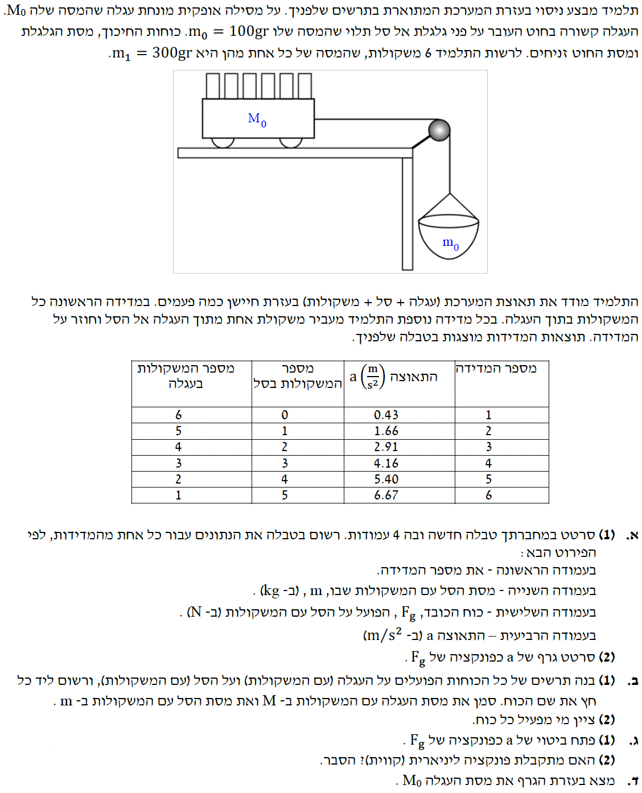

פתרון מלא המותאם לתלמידי 5 יח"ל, שלב אחר שלב.

לבנות טבלה חדשה הכוללת את:
לפי הכללים שלנו, תמיד נעבוד במערכת יחידות סטנדרטית (מטר, קילוגרם, שנייה). נתון לנו משקל בגרמים, לכן נמיר לקילוגרמים (נחלק ב-1000):
כמו כן, נזכור שתאוצת הכובד היא תמיד חיובית בחישובים שלנו:
כדי לחשב את כוח הכובד, נשתמש בנוסחה מדינמיקה המופיעה בדף הנוסחאות:
נחשב עבור כל מדידה את המסה הכוללת התלויה $m$ (מסת הסל + מספר המשקולות בסל כפול מסת משקולת בודדת), ולאחר מכן נכפיל ב- $g=10$ כדי למצוא את $F_g$.
לדוגמה עבור מדידה 2 (משקולת אחת בסל): $m = 0.1 + 1 \cdot 0.3 = 0.4 \text{ kg}$, ולכן $F_g = 0.4 \cdot 10 = 4 \text{ N}$.
| מספר המדידה | מסת הסל עם המשקולות $m \text{ (kg)}$ |
כוח הכובד על הסל $F_g \text{ (N)}$ |
תאוצה $a \text{ (m/s}^2\text{)}$ |
|---|---|---|---|
| 1 | 0.1 | 1.0 | 0.43 |
| 2 | 0.4 | 4.0 | 1.66 |
| 3 | 0.7 | 7.0 | 2.91 |
| 4 | 1.0 | 10.0 | 4.16 |
| 5 | 1.3 | 13.0 | 5.40 |
| 6 | 1.6 | 16.0 | 6.67 |
הטבלה שהכנו בסעיף הקודם.
לסרטט גרף של התאוצה $a$ כפונקציה של כוח הכובד $F_g$.
המשמעות: ציר ה-Y יהיה $a$, וציר ה-X יהיה $F_g$.
מערכת המורכבת משני גופים הקשורים בחוט חסר מסה העובר דרך גלגלת חסרת חיכוך.
1. לסרטט תרשים כוחות הפועלים על כל גוף בנפרד.
2. לציין מי מפעיל כל כוח.
בבעיות מערכת מחוברת, מומלץ לקבוע את כיוון הציר החיובי לפי כיוון התנועה הצפוי. עבור העגלה, נבחר ציר $x$ חיובי ימינה. עבור הסל התלוי, נבחר ציר $y$ חיובי כלפי מטה. כך, לשני הגופים יש אותה תאוצה חיובית $a$ (גודל המהירות שלהם גדל באותו קצב, כי הם קשורים בחוט מתוח).
תרשימי הכוחות מסעיף ב'. כמו כן, נתון שבמהלך הניסוי, המסה הכוללת של המערכת לא משתנה (רק מעבירים משקולות ממקום למקום).
1. לפתח ביטוי מתמטי המציג את התאוצה $a$ כפונקציה של כוח הכובד הפועל על הסל $F_g$.
2. לקבוע האם זוהי פונקציה ליניארית ולהסביר.
נשתמש בחוק השני של ניוטון עבור כל גוף בנפרד:
לא נקפוץ ישר למשוואת "מערכת". נרשום משוואה לכל גוף על פי מערכת הצירים שבחרנו.
עבור העגלה (ציר תנועה אופקי ימינה):
עבור הסל (ציר תנועה אנכי מטה):
כעת, נחבר את שתי המשוואות כדי להיפטר מהכוח הפנימי (המתיחות $T$):
נשים לב שסכום המסות $(M_1 + M_2)$ הוא בעצם המסה הכוללת של כל המערכת. נתון שהמסה הכוללת אינה משתנה במהלך הניסוי, והיא תמיד מורכבת מ: העגלה הריקה (נסמנה ב-$M$), הסל הריק ($m_0$), ו-6 משקולות (שכל אחת מסתה $m_1$). לכן המסה הכוללת תמיד שווה ל:
נציב זאת במשוואה ונבודד את התאוצה $a$:
כן. הפונקציה שקיבלנו היא מהצורה $y = k \cdot x$.
מכיוון שהמסה הכוללת במערכת ($M + m_0 + 6m_1$) נשמרת קבועה לאורך כל הניסוי, השיפוע הוא מספר קבוע, והגרף שנוצר הוא קו ישר העובר בראשית הצירים.
למצוא את מסת העגלה הריקה $M$.
כלל ברזל בפיזיקה: כאשר מחשבים שיפוע מגרף, בוחרים שתי נקודות מתוך קו המגמה שסרטטתם, ולעולם לא מתוך טבלת הנתונים! תפקידו של קו המגמה (Best fit line) הוא למצע ולהחליק את שגיאות המדידה של הניסוי. לכן, קחו שתי נקודות שרחוקות זו מזו, שקל לקרוא מהרשת של הגרף, ונמצאות בדיוק על הקו.
הערה: בשאלה הספציפית הזו, נתוני הטבלה אידיאליים ולכן הנקודה הראשונה והאחרונה יושבות במקרה בדיוק על קו המגמה, מה שמאפשר לנו להשתמש בערכים שלהן.
נחשב את שיפוע קו המגמה בעזרת שתי נקודות רחוקות שעליו, למשל $(1.0, 0.43)$ ו- $(16.0, 6.67)$:
ראינו בסעיף הקודם שהשיפוע שווה ל- $\frac{1}{M + m_0 + 6m_1}$, כלומר ל- 1 חלקי המסה הכוללת של המערכת!
נשווה את השיפוע לביטוי המייצג אותו כדי למצוא את המסה הכוללת ($M_{total}$):
נציב את הנתונים הידועים בביטוי של המסה הכוללת כדי לחלץ את $M$ (מסת העגלה):
$$ M = 2.4 - 1.9 = 0.5 \text{ kg} $$
מסת העגלה הריקה היא 0.5 ק"ג.